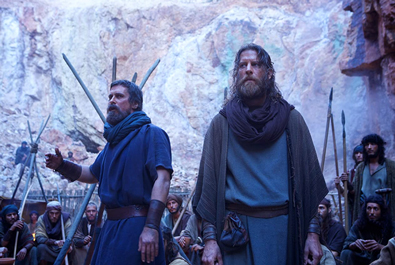
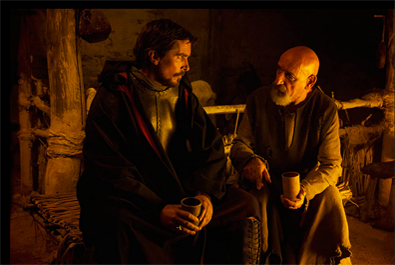
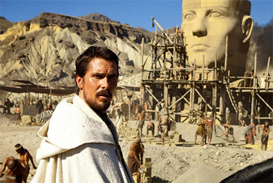
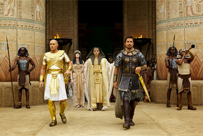
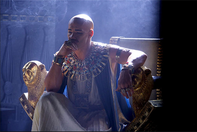
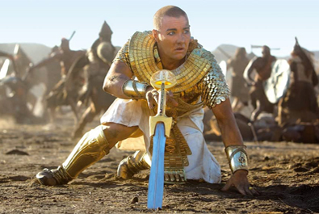

Peter Chernin
Ridley Scott
Jenno Topping
Michael Schaefer
Mark Huffam
Adam Cooper
Bill Collage
Jeffrey Caine
Steven Zaillian
$268.2 million


Moses
Seti I
Viceroy Hegep
Nun
Malak
High Priestess
Zipporah
Miriam
Jethro
Khyan


In June 2012, Ridley Scott announced that he was developing an adaptation of the Book of Exodus, tentatively titled Moses. In March 2014, the studio changed the title of the film to Exodus: Gods and Kings. Some controversy and criticism arose concerning biblical accuracy of the script and its portrayal. Ridley Scott publicly stated that he would be looking to natural causes for the miracles, including drainage from a tsunami for the parting of the Red Sea. According to Scott, the parting of the Red Sea was caused by a tsunami believed to have been triggered by an underwater earthquake off the Italian coast around 3000 BC. Christian Bale said of Moses, whom he portrayed, "I think the man was likely schizophrenic and was one of the most barbaric individuals that I ever read about in my life." Author Brian Godawa responded, "It's accurate to portray Moses as an imperfect hero, so Christians won't take issue with that, but to be so extreme as to call him one of the most barbaric people in history, that sounds like he's going out of his way to distance himself from the very people you’d think he wants to appeal to."
The Sydney Morning Herald and Christian Today reported that the casting of white actors in the lead roles was being criticized. Four white actors were cast to play the Hebrew and Egyptian lead characters: Christian Bale, Joel Edgerton, Sigourney Weaver and Aaron Paul. The Sydney Morning Herald also reported the online community's observations that the film gives a European profile to the Great Sphinx of Giza. It also compared Exodus to the 1956 film The Ten Commandments with its all-white cast and said, "The racial climate, number of black actors, and opportunities provided to them were very different in 1956, however." Some Twitter users called for a boycott of the film.
Shooting of the film began in October 2013 in Almería, Spain. Additional filming was scheduled at Pinewood Studios, England. The Red Sea scene was filmed at a beach on Fuerteventura, one of the Canary Islands off the northwest coast of Africa. More than 1,500 visual effects shots were created to digitally bolster the ranks of the Hebrews and to help authentically render plagues of hail, locusts, and frogs, although 400 live frogs were used on the set. There were 400,000 humans depicted in total, with 30 to 40 people accompanying Bale while crossing the Red Sea and the rest being computer generated. CGI produced the 180-foot wave, the horses, and the chariots. For the hailstorm scene, the special effects team built 30 special cannons that would fire polymer balls to bounce and shatter with the same characteristics as an ice ball. The distant hail is a computer simulation.
Exodus: Gods and Kings received generally negative reviews from critics. They praised its acting performances and technical achievements, but criticised its pacing, thin screenwriting and lack of character development. The film veered creatively from the Bible and Scott's honesty about his own atheist beliefs did not help appeal to a potential audience of believers. The film has a score of 30% on 'Rotten Tomatoes' based on 210 reviews, with an average rating of 5.00/10. The critical consensus states, "While sporadically stirring, and suitably epic in its ambitions, Exodus: Gods and Kings can't quite live up to its classic source material."

